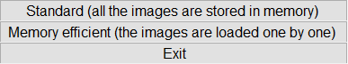

Contents
Lens Calibration DEMO
This demo goes though the intrinsic lens calibration due to lens distortion. It is specific to each camera and lens. The code is meant to be run line by line while following the powerpoint presentation located HERE => https://drive.google.com/open?id=0B_hxNlYenFbsZTdpU0RnTHFHbE0
clear all close all % make sure you are in the /UAV-Processing-Toolbox/lensCalibDemo/ directory where lensCalibDemo.m is located disp('Choose the directory where lensCalibDemo.m and images are located'); demo_dir=uigetdir('.','Choose the directory where lensCalibDemo.m and images are located'); cd(demo_dir) % add the path to where the caltech toolbox is located disp('Choose the directory where the Caltech Toolbox is located'); warning('off') caltech_dir=uigetdir('.','Choose the directory where the Caltech Toolbox is located'); addpath(genpath(caltech_dir)) % add the UAV Toolbox path + subdirectories addpath(genpath('../'))
Choose the directory where lensCalibDemo.m and images are located Choose the directory where the Caltech Toolbox is located
Set Parameters
change default figure size
set(0, 'DefaultFigurePosition', [300 100 1000 700]); % Set the default to calculate all 5 distortion coefficients est_dist = [1;1;1;1;1];
Run the Caltech GUI
calib_gui;
% Click "Standard" for computers with >4 GB of RAM and "Memory Efficient" for slower computers'
 1st step: Find images
- Click "Image Names" to find images in the CURRENT directory
- Enter "DJI_" as image prefix name
- Enter "j" for jpegs
2nd step: Extract grid corners
- Click "Extract Grid Corners" to start the calibration
- Hit "Enter" to process all images
- Hit "Enter" 3 times to chose default options for corner finding
- Click the 4 grid corners in a clock wise direction
- Type "60" for dX and dY as the size of the squares
- Hit "Enter" for default of no distortion
3rd step: Calibration
- Click "Calibration" to start the calibration
% Calibration coefficients now calculated
4th step: Check Results
Change inputs to decrease error in calibration
% # Click "Analyse Error" % If error is high (Striving for a pixel error < 1), Click "Recomp. % corners" to use a smaller window to find the corners % % # Click "Analyse Error" % Click outlier points to determine which images to remove from calibration calculation % % # Click "Add/Suppress images % Remove images with high pixel error determined in the previous step % % # Click "Calibration" to RECOMPUTE the calibration with new inputs %
5th step: Plot Final results
Plot output figures with distortion information # Click "Show Extrinsic" # Click Reproject on Images"
visualize_distortions
Undefined function or variable 'nx'. Error in visualize_distortions (line 11) [mx,my] = meshgrid(0:nx/20:(nx-1),0:ny/20:(ny-1)); Error in lensCalibDemo (line 73) visualize_distortions
6th step: Save GUI data
Click "Save"
Exit GUI
Click "Exit"
Save in correct format
Save necessary variables into a structure name lcp
lcp.NU = nx; % number of pixel columns lcp.NV = ny; % number of pixel rows lcp.c0U = cc(1); % 2 components of principal points lcp.c0V = cc(2); lcp.fx = fc(1); % 2 components of focal lengths (in pixels) lcp.fy = fc(2); lcp.d1 = kc(1); % radial distortion coefficients lcp.d2 = kc(2); lcp.d3 = kc(5); lcp.t1 = kc(3); % tangential distortion coefficients lcp.t2 = kc(4); lcp.r = 0:0.001:1.5; lcp = makeRadDist(lcp); % computes the radial stretch factor lcp = makeTangDist(lcp);% computes the tangential stretch factor % Save for use in running geometry rectifications save('LCP.mat','lcp') % % Copyright (C) 2017 Coastal Imaging Research Network % and Oregon State University % This program is free software: you can redistribute it and/or % modify it under the terms of the GNU General Public License as % published by the Free Software Foundation, version 3 of the % License. % This program is distributed in the hope that it will be useful, % but WITHOUT ANY WARRANTY; without even the implied warranty of % MERCHANTABILITY or FITNESS FOR A PARTICULAR PURPOSE. See the % GNU General Public License for more details. % You should have received a copy of the GNU General Public License % along with this program. If not, see % <http://www.gnu.org/licenses/>. % CIRN: https://coastal-imaging-research-network.github.io/ % CIL: http://cil-www.coas.oregonstate.edu % %key cBathy %